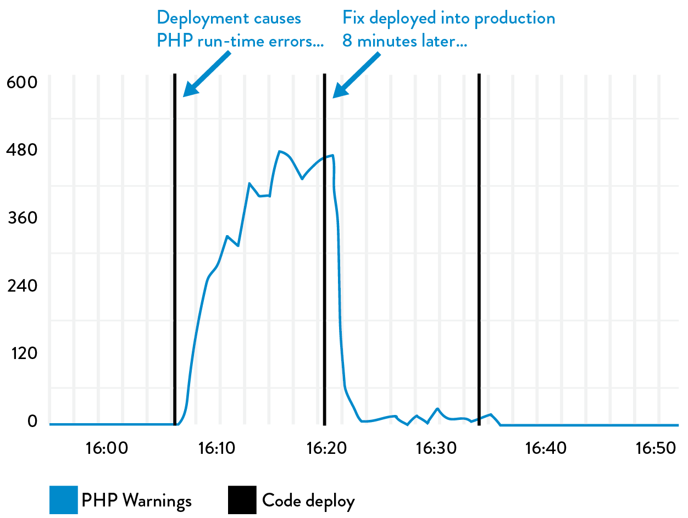
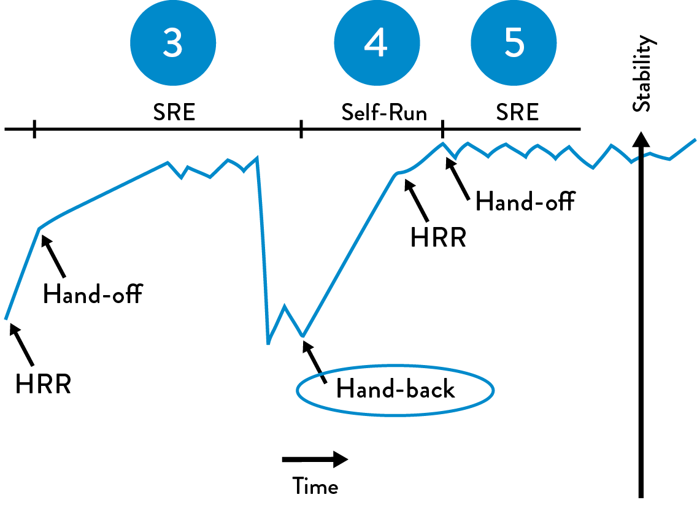

16Enable Feedback So Development and Operations Can Safely Deploy Code
In 2006, Nick Galbreath was VP of Engineering at Right Media, responsible for both the Development and Operations departments for an online advertising platform that displayed and served over ten billion impressions daily.
Galbreath described the competitive landscape they operated in:
In our business, ad inventory levels were extremely dynamic, so we needed to respond to market conditions within minutes. This meant that Development had to be able to quickly make code changes and get them into production as soon as possible, otherwise we would lose to faster competitors. We found that having a separate group for testing, and even deployment, was simply too slow. We had to integrate all these functions into one group, with shared responsibilities and goals. Believe it or not, our biggest challenge was getting developers to overcome their fear of deploying their own code!
There is an interesting irony here: Dev often complains about Ops being afraid to deploy code. But in this case, when given the power to deploy their own code, developers became just as afraid to perform code deployments.
The fear of deploying code that was shared by both Dev and Ops at Right Media is not unusual. However, Galbreath observed that providing faster and more frequent feedback to engineers performing deployments (whether Dev or Ops), as well as reducing the batch size of their work, created safety and then confidence.
After observing many teams go through this transformation, Galbreath describes their progression as follows:
We start with no one in Dev or Ops being willing to push the “deploy code” button that we’ve built that automates the entire code deployment process, because of the paralyzing fear of being the first person to potentially bring all of the production systems down. Eventually, when someone is brave enough to volunteer to push their code into production, inevitably, due to incorrect assumptions or production subtleties that weren’t fully appreciated, the first production deployment doesn’t go smoothly—and because we don’t have enough production telemetry, we only find out about the problems when customers tell us.
To fix the problem, our team urgently fixes the code and pushes it into production, but this time with more production telemetry added to our applications and environment. This way, we can actually confirm that our fix restored service correctly, and we’ll be able to detect this type of problem before a customer tells us next time.
Later, more developers start to push their own code into production. And because we’re working in a complex system, we’ll still probably break something in production, but this time we’ll be able to quickly see what functionality broke, and quickly decide whether to roll back or fix-forward, resolving the problem. This is a huge victory for the entire team and everyone celebrates—we’re now on a roll.
However, the team wants to improve the outcomes of their deployments, so developers proactively get more peer reviews of their code changes (described in chapter 18), and everyone helps each other write better automated tests so we can find errors before deployment. And because everyone now knows that the smaller our production changes, the fewer problems we will have, developers start checking ever-smaller increments of code more frequently into the deployment pipeline, ensuring that their change is working successfully in production before moving to their next change.
We are now deploying code more frequently than ever, and service stability is better than ever too. We have re-discovered that the secret to smooth and continuous flow is making small, frequent changes that anyone can inspect and easily understand.
Galbreath observes that the above progression benefits everyone, including Development, Operations, and Infosec. “As the person who is also responsible for security, it’s reassuring to know that we can deploy fixes into production quickly, because changes are going into production throughout the entire day. Furthermore, it always amazes me how interested every engineer becomes in security when you find problems in their code that they are responsible for and that they can quickly fix themselves.”
The Right Media story shows that it is not enough to merely automate the deployment process—we must also integrate the monitoring of production telemetry into our deployment work, as well as establish the cultural norms that everyone is equally responsible for the health of the entire value stream.
In this chapter, we create the feedback mechanisms that enable us to improve the health of the value stream at every stage of the service life cycle, from product design through development and deployment and into operation and eventually retirement. By doing this, we ensure that our services are “production ready,” even at the earliest stages of the project, as well as integrating the learnings from each release and production problem into our future work, resulting in better safety and productivity for everyone.
USE TELEMETRY TO MAKE DEPLOYMENTS SAFER
In this step, we ensure that we are actively monitoring our production telemetry when anyone performs a production deployment, as was illustrated in the Right Media story. This allows whoever is doing the deployment, be it Dev or Ops, to quickly determine whether features are operating as designed after the new release is running in production. After all, we should never consider our code deployment or production change to be done until it is operating as designed in the production environment.
We do this by actively monitoring the metrics associated with our feature during our deployment to ensure we haven’t inadvertently broken our service—or worse, that we broke another service. If our change breaks or impairs any functionality, we quickly work to restore service, bringing in whoever else is required to diagnose and fix the issue.†
As described in Part III, our goal is to catch errors in our deployment pipeline before they get into production. However, there will still be errors that we don’t detect, and we rely on production telemetry to quickly restore service. We may choose to turn off broken features with feature toggles (which is often the easiest and least risky option since it involves no deployments to production), or fix forward (i.e., make code changes to fix the defect, which are then pushed into production through the deployment pipeline), or roll back (e.g., switch back to the previous release by using feature toggles or by taking broken servers out of rotation using the blue-green or canary release patterns, etc.)
Although fixing forward can often be dangerous, it can be extremely safe when we have automated testing and fast deployment processes, and sufficient telemetry that allows us to quickly confirm whether everything is functioning correctly in production.
Figure 37 shows a deployment of PHP code change at Etsy that generated a spike in PHP runtime warnings—in this case, the developer quickly noticed the problem within minutes, and generated a fix and deployed it into production, resolving the issue in less than ten minutes.
Because production deployments are one of the top causes of production issues, each deployment and change event is overlaid onto our metric graphs to ensure that everyone in the value stream is aware of relevant activity, enabling better communication and coordination, as well as faster detection and recovery.
 Figure 37: Deployment to Etsy.com causes PHP run-time warnings and is quickly fixed
(Source: Mike Brittain, “Tracking Every Release.”)
DEV SHARES PAGER ROTATION DUTIES WITH OPS
Even when our production deployments and releases go flawlessly, in any complex service we will still have unexpected problems, such as incidents and outages that happen at inopportune times (every night at 2 a.m.). Left unfixed, these can cause recurring problems and suffering for Ops engineers downstream, especially when these problems are not made visible to the upstream engineers responsible for creating the problem.
Even if the problem results in a defect being assigned to the feature team, it may be prioritized below the delivery of new features. The problem may keep recurring for weeks, months, or even years, causing continual chaos and disruption in Operations. This is an example of how upstream work centers can locally optimize for themselves but actually degrade performance for the entire value stream.
To prevent this from happening, we will have everyone in the value stream share the downstream responsibilities of handling operational incidents. We can do this by putting developers, development managers, and architects on pager rotation, just as Pedro Canahuati, Facebook Director of Production Engineering, did in 2009. This ensures everyone in the value stream gets visceral feedback on any upstream architectural and coding decisions they make.
By doing this, Operations doesn’t struggle, isolated and alone with code-related production issues; instead, everyone is helping find the proper balance between fixing production defects and developing new functionality, regardless of where we reside in the value stream. As Patrick Lightbody, SVP of Product Management at New Relic, observed in 2011, “We found that when we woke up developers at 2 a.m., defects were fixed faster than ever.”
One side effect of this practice is that it helps Development management see that business goals are not achieved simply because features have been marked as “done.” Instead, the feature is only done when it is performing as designed in production, without causing excessive escalations or unplanned work for either Development or Operations.‡
This practice is equally applicable for market-oriented teams, responsible for both developing the feature and running it in production, and for functionally-oriented teams. As Arup Chakrabarti, Operations Engineering Manager at PagerDuty, observed during a 2014 presentation, “It’s becoming less and less common for companies to have dedicated on-call teams; instead, everyone who touches production code and environments is expected to be reachable in the event of downtime.”
Regardless of how we’ve organized our teams, the underlying principles remain the same: when developers get feedback on how their applications perform in production, which includes fixing it when it breaks, they become closer to the customer, this creates a buy-in that everyone in the value stream benefits from.
HAVE DEVELOPERS FOLLOW WORK DOWNSTREAM
One of the most powerful techniques in interaction and user experience design (UX) is contextual inquiry. This is when the product team watches a customer use the application in their natural environment, often working at their desk. Doing so often uncovers startling ways that customers struggle with the application, such as requiring scores of clicks to perform simple tasks in their daily work, cutting and pasting text from multiple screens, or writing down notes on paper. All of these are examples of compensatory behaviors and workarounds for usability issues.
The most common reaction for developers after participating in a customer observation is dismay, often stating “how awful it was seeing the many ways we have been inflicting pain on our customers.” These customer observations almost always result in significant learning and a fervent desire to improve the situation for the customer.
Our goal is to use this same technique to observe how our work affects our internal customers. Developers should follow their work downstream, so they can see how downstream work centers must interact with their product to get it running into production.§
Developers want to follow their work downstream—by seeing customer difficulties firsthand, they make better and more informed decisions in their daily work.
By doing this, we create feedback on the non-functional aspects of our code—all the elements that are not related to the customer-facing feature—and identify ways that we can improve deployability, manageability, operability, and so on.
UX observation often has a powerful impact on the observers. When describing his first customer observation, Gene Kim, the founder and CTO at Tripwire for thirteen years and co-author of this book, said:
One of the worst moments of my professional career was in 2006 when I spent an entire morning watching one of our customers use our product. I was watching him perform an operation that we expected customers to do weekly, and, to our extreme horror, we discovered that it required sixty-three clicks. This person kept apologizing, saying things like, “Sorry, there’s probably a better way to do this.”
Unfortunately, there wasn’t a better way to do that operation. Another customer described how initial product setup took 1,300 steps. Suddenly, I understood why the job of managing our product was always assigned to the newest engineer on the team—no one wanted the job of running our product. That was one of the reasons I helped create the UX practice at my company, to help atone for the pain we were inflicting on our customers.
UX observation enables the creation of quality at the source and results in far greater empathy for fellow team members in the value stream. Ideally, UX observation helps us as we create codified non-functional requirements to add to our shared backlog of work, eventually allowing us to proactively integrate them into every service we build, which is an important part of creating a DevOps work culture.¶
HAVE DEVELOPERS INITIALLY SELF-MANAGE THEIR PRODUCTION SERVICE
Even when Developers are writing and running their code in production-like environments in their daily work, Operations may still experience disastrous production releases because it is the first time we actually see how our code behaves during a release and under true production conditions. This result occurs because operational learnings often occur too late in the software life cycle.
Left unaddressed, the result is often production software that is difficult to operate. As an anonymous Ops engineer once said, “In our group, most system administrators lasted only six months. Things were always breaking in production, the hours were insane, and application deployments were painful beyond belief—the worst part was pairing the application server clusters, which would take us six hours. During each moment, we all felt like the developers personally hated us.”
This can be an outcome of not having enough Ops engineers to support all the product teams and the services we already have in production, which can happen in both functionally- and market-oriented teams.
One potential countermeasure is to do what Google does, which is have Development groups self-manage their services in production before they become eligible for a centralized Ops group to manage. By having developers be responsible for deployment and production support, we are far more likely to have a smooth transition to Operations.**
To prevent the possibility of problematic, self-managed services going into production and creating organizational risk, we may define launch requirements that must be met in order for services to interact with real customers and be exposed to real production traffic. Furthermore, to help the product teams, Ops engineers should act as consultants to help them make their services production-ready.
By creating launch guidance, we help ensure that every product team benefits from the cumulative and collective experience of the entire organization, especially Operations. Launch guidance and requirements will likely include the following:
- Defect counts and severity: Does the application actually perform as designed?
- Type/frequency of pager alerts: Is the application generating an unsupportable number of alerts in production?
- Monitoring coverage: Is the coverage of monitoring sufficient to restore service when things go wrong?
- System architecture: Is the service loosely-coupled enough to support a high rate of changes and deployments in production?
- Deployment process: Is there a predictable, deterministic, and sufficiently automated process to deploy code into production?
- Production hygiene: Is there evidence of enough good production habits that would allow production support to be managed by anyone else?
Superficially, these requirements may appear similar to traditional production checklists we have used in the past. However, the key differences are we require effective monitoring to be in place, deployments to be reliable and deterministic, and an architecture that supports fast and frequent deployments.
If any deficiencies are found during the review, the assigned Ops engineer should help the feature team resolve the issues or even help re-engineer the service if necessary, so that it can be easily deployed and managed in production.
At this time, we may also want to learn whether this service is subject to any regulatory compliance objectives or if it is likely to be in the future:
- Does the service generate a significant amount of revenue? (For example, if it is more than 5% of total revenue of a publicly-held US corporation, it is a “significant account” and in-scope for compliance with Section 404 of the Sarbanes-Oxley Act of 2002 [SOX].)
- Does the service have high user traffic or have high outage/impairment costs? (i.e., do operational issues risk creating availability or reputational risk?)
- Does the service store payment cardholder information, such as credit card numbers, or personally identifiable information, such as Social Security numbers or patient care records? Are there other security issues that could create regulatory, contractual obligation, privacy, or reputation risk?
- Does the service have any other regulatory or contractual compliance requirements associated with it, such as US export regulations, PCI-DSS, HIPAA, and so forth?
This information helps ensure that we effectively manage not only the technical risks associated with this service, but also any potential security and compliance risks. It also provides essential input into the design of the production control environment.
 Figure 38: The “Service Handback” at Google (Source: “SRE@Google: Thousands of DevOps Since 2004,” YouTube video, 45:57, posted by USENIX, January 12, 2012, https://www.youtube.com/watch?v=iIuTnhdTzK0.)
By integrating operability requirements into the earliest stages of the development process and having Development initially self-manage their own applications and services, the process of transitioning new services into production becomes smoother, becoming far easier and more predictable to complete. However, for services already in production, we need a different mechanism to ensure that Operations is never stuck with an unsupportable service in production. This is especially relevant for functionally-oriented Operations organizations.
In this step, we may create a service handback mechanism—in other words, when a production service becomes sufficiently fragile, Operations has the ability to return production support responsibility back to Development.
When a service goes back into a developer-managed state, the role of Operations shifts from production support to consultation, helping the team make the service production-ready.
This mechanism serves as our pressure escape valve, ensuring that we never put Operations in a situation where they are trapped into managing a fragile service while an ever-increasing amount of technical debt buries them and amplifies a local problem into a global problem. This mechanism also helps ensure that Operations has enough capacity to work on improvement work and preventive projects.
The hand-back remains a long-standing practice at Google and is perhaps one of the best demonstrations of the mutual respect between Dev and Ops engineers. By doing this, Development is able to quickly generate new services, with Ops engineers joining the team when the services become strategically important to the company and, in rare cases, handing them back when they become too troublesome to manage in production.†† The following case study of Site Reliability Engineering at Google describes how the Hand-off Readiness Review and Launch Readiness Review processes evolved, and the benefits that resulted.
Case Study
The Launch and Hand-off Readiness Review at Google (2010)
One of the many surprising facts about Google is that they have a functional orientation for their Ops engineers, who are referred to as “Site Reliability Engineers” (SRE), a term coined by Ben Treynor Sloss in 2004.‡‡ That year, Treynor Sloss started off with a staff of seven SREs that grew to over 1,200 SREs by 2014. As Treynor Sloss said, “If Google ever goes down, it’s my fault.” Treynor Sloss has resisted creating a single sentence definition of what SREs are, but, he once described SREs as “what happens when a software engineer is tasked with what used to be called operations.”
Every SRE reports to Treynor Sloss’s organization to help ensure consistency of quality of staffing and hiring, and they are embedded into product teams across Google (which also provide their funding). However, SREs are still so scarce they are assigned only to the product teams that have the highest importance to the company or those that must comply with regulatory requirements. Furthermore, those services must have low operational burden. Products that don’t meet the necessary criteria remain in a developer-managed state.
Even when new products become important enough to the company to warrant being assigned an SRE, developers still must have self-managed their service in production for at least six months before it becomes eligible to have an SRE assigned to the team.
To help ensure that these self-managed product teams can still benefit from the collective experience of the SRE organization, Google created two sets of safety checks for two critical stages of releasing new services called the Launch Readiness Review and the Hand-Off Readiness Review (LRR and HRR, respectively).
The LRR must be performed and signed off on before any new Google service is made publicly available to customers and receives live production traffic, while the HRR is performed when the service is transitioned to an Ops-managed state, usually months after the LRR. The LRR and HRR checklists are similar, but the HRR is far more stringent and has higher acceptance standards, while the LRR is self-reported by the product teams.
Any product team going through an LRR or HRR has an SRE assigned to them to help them understand the requirements and to help them achieve those requirements. The LRR and HRR launch checklists have evolved over time so every team can benefit from the collective experiences of all previous launches, whether successful or unsuccessful. Tom Limoncelli noted during his “SRE@Google: Thousands of DevOps Since 2004” presentation in 2012, “Every time we do a launch, we learn something. There will always be some people who are less experienced than others doing releases and launches. The LRR and HRR checklists are a way to create that organizational memory.”
Requiring product teams to self-manage their own services in production forces Development to walk in the shoes of Ops, but guided by the LRR and HRR, which not only makes service transition easier and more predictable, but also helps create empathy between upstream and downstream work centers.
 Figure 39: The “Launch readiness review and hand-offs readiness review” at Google (Source: “SRE@Google: Thousands of DevOps Since 2004,” YouTube video, 45:57, posted by USENIX, January 12, 2012, https://www.youtube.com/watch?v=iIuTnhdTzK0.)
Figure 39: The “Launch readiness review and hand-offs readiness review” at Google (Source: “SRE@Google: Thousands of DevOps Since 2004,” YouTube video, 45:57, posted by USENIX, January 12, 2012, https://www.youtube.com/watch?v=iIuTnhdTzK0.)
Limoncelli noted, “In the best case, product teams have been using the LRR checklist as a guideline, working on fulfilling it in parallel with developing their service, and reaching out to SREs to get help when they need it.”
Furthermore, Limoncelli observed, “The teams that have the fastest HRR production approval are the ones that worked with SREs earliest, from the early design stages up until launch. And the great thing is, it’s always easy to get an SRE to volunteer to help with your project. Every SRE sees value in giving advice to project teams early, and will likely volunteer a few hours or days to do just that.”
The practice of SREs helping product teams early is an important cultural norm that is continually reinforced at Google. Limoncelli explained, “Helping product teams is a long-term investment that will pay off many months later when it comes time to launch. It is a form of ‘good citizenship’ and ‘community service’ that is valued, it is routinely considered when evaluating engineers for SRE promotions.”
CONCLUSION
In this chapter, we discussed the feedback mechanisms that enable us to improve our service at every stage of our daily work, whether it is deploying changes into production, fixing code when things go wrong and engineers are paged, having developers follow their work downstream, creating non-functional requirements that help development teams write more production-ready code, or even handing problematic services back to be self-managed by Development.
By creating these feedback loops, we make production deployments safer, increase the production readiness of code created by Development, and help create a better working relationship between Development and Operations by reinforcing shared goals, responsibilities, and empathy.
In the next chapter, we explore how telemetry can enable hypothesis-driven development and A/B testing to perform experiments that help us achieve our organizational goals and win in the marketplace.

Table of contents
- Preface
- Foreword
- Imagine a World Where Dev and Ops Become DevOps
-
Part I The Three Ways
- A BRIEF HISTORY
- 1 Agile, Continuous Delivery, and the Three Ways
- 2 The First Way: The Principles of Flow
- 3 The Second Way: The Principles of Feedback
- 4 The Third Way: The Principles of Continual Learning and Experimentation
-
Part II Where to Start
- Introduction
- 5 Selecting Which Value Stream to Start With
- 6 Understanding the Work in Our Value Stream, Making it Visible, and Expanding it Across the Organization
-
7 How to Design Our Organization and Architecture with Conway’s Law in Mind
- ORGANIZATIONAL ARCHETYPES
- PROBLEMS OFTEN CAUSED BY OVERLY FUNCTIONAL ORIENTATION (“OPTIMIZING FOR COST”)
- ENABLE MARKET-ORIENTED TEAMS (“OPTIMIZING FOR SPEED”)
- MAKING FUNCTIONAL ORIENTATION WORK
- TESTING, OPERATIONS, AND SECURITY AS EVERYONE’S JOB, EVERY DAY
- ENABLE EVERY TEAM MEMBER TO BE A GENERALIST
- FUND NOT PROJECTS, BUT SERVICES AND PRODUCTS
- DESIGN TEAM BOUNDARIES IN ACCORDANCE WITH CONWAY’S LAW
- CREATE LOOSELY-COUPLED ARCHITECTURES TO ENABLE DEVELOPER PRODUCTIVITY AND SAFETY
- CONCLUSION
- 8 How to Get Great Outcomes by Integrating Operations into the Daily Work of Development
-
PART III—THE FIRST WAY: THE TECHNICAL PRACTICES OF FLOW
- 9 Create the Foundations of Our Deployment Pipeline
-
10 Enable Fast and Reliable Automated Testing
- CONTINUOUSLY BUILD, TEST, AND INTEGRATE OUR CODE AND ENVIRONMENTS
-
BUILD A FAST AND RELIABLE AUTOMATED VALIDATION TEST SUITE
- CATCH ERRORS AS EARLY IN OUR AUTOMATED TESTING AS POSSIBLE
- ENSURE TESTS RUN QUICKLY (IN PARALLEL, IF NECESSARY)
- WRITE OUR AUTOMATED TESTS BEFORE WE WRITE THE CODE (“TEST-DRIVEN DEVELOPMENT”)
- AUTOMATE AS MANY OF OUR MANUAL TESTS AS POSSIBLE
- INTEGRATE PERFORMANCE TESTING INTO OUR TEST SUITE
- INTEGRATE NON-FUNCTIONAL REQUIREMENTS TESTING INTO OUR TEST SUITE
- PULL OUR ANDON CORD WHEN THE DEPLOYMENT PIPELINE BREAKS
- CONCLUSION
- 11 Enable and Practice Continuous Integration
- 12 Automate and Enable Low-Risk Releases
- 13 Architect for Low-Risk Releases
-
PART IV—THE SECOND WAY: THE TECHNICAL PRACTICES OF FEEDBACK
- Introduction
-
14 Create Telemetry to Enable Seeing and Solving Problems
- CREATE OUR CENTRALIZED TELEMETRY INFRASTRUCTURE
- CREATE APPLICATION LOGGING TELEMETRY THAT HELPS PRODUCTION
- USE TELEMETRY TO GUIDE PROBLEM SOLVING
- ENABLE CREATION OF PRODUCTION METRICS AS PART OF DAILY WORK
- CREATE SELF-SERVICE ACCESS TO TELEMETRY AND INFORMATION RADIATORS
- FIND AND FILL ANY TELEMETRY GAPS
- CONCLUSION
- 15 Analyze Telemetry to Better Anticipate Problems and Achieve Goals
- 16 Enable Feedback So Development and Operations Can Safely Deploy Code
- 17 Integrate Hypothesis-Driven Development and A/B Testing into Our Daily Work
-
18 Create Review and Coordination Processes to Increase Quality of Our Current Work
- THE DANGERS OF CHANGE APPROVAL PROCESSES
- POTENTIAL DANGERS OF “OVERLY CONTROLLING CHANGES”
- ENABLE COORDINATION AND SCHEDULING OF CHANGES
- ENABLE PEER REVIEW OF CHANGES
- POTENTIAL DANGERS OF DOING MORE MANUAL TESTING AND CHANGE FREEZES
- ENABLE PAIR PROGRAMMING TO IMPROVE ALL OUR CHANGES
- FEARLESSLY CUT BUREAUCRATIC PROCESSES
- CONCLUSION
- PART IV CONCLUSION
-
PART V—THE THIRD WAY: THE TECHNICAL PRACTICES OF CONTINUAL LEARNING AND EXPERIMENTATION
- Introduction
-
19 Enable and Inject Learning into Daily Work
- ESTABLISH A JUST, LEARNING CULTURE
- SCHEDULE BLAMELESS POST-MORTEM MEETINGS AFTER ACCIDENTS OCCUR
- PUBLISH OUR POST-MORTEMS AS WIDELY AS POSSIBLE
- DECREASE INCIDENT TOLERANCES TO FIND EVER-WEAKER FAILURE SIGNALS
- REDEFINE FAILURE AND ENCOURAGE CALCULATED RISK-TAKING
- INJECT PRODUCTION FAILURES TO ENABLE RESILIENCE AND LEARNING
- INSTITUTE GAME DAYS TO REHEARSE FAILURES
- CONCLUSION
-
20 Convert Local Discoveries into Global Improvements
- USE CHAT ROOMS AND CHAT BOTS TO AUTOMATE AND CAPTURE ORGANIZATIONAL KNOWLEDGE
- AUTOMATE STANDARDIZED PROCESSES IN SOFTWARE FOR RE-USE
- CREATE A SINGLE, SHARED SOURCE CODE REPOSITORY FOR OUR ENTIRE ORGANIZATION
- SPREAD KNOWLEDGE BY USING AUTOMATED TESTS AS DOCUMENTATION AND COMMUNITIES OF PRACTICE
- DESIGN FOR OPERATIONS THROUGH CODIFIED NON-FUNCTIONAL REQUIREMENTS
- BUILD REUSABLE OPERATIONS USER STORIES INTO DEVELOPMENT
- ENSURE TECHNOLOGY CHOICES HELP ACHIEVE ORGANIZATIONAL GOALS
- CONCLUSION
- 21 Reserve Time to Create Organizational Learning and Improvement
-
22 Information Security as Everyone’s Job, Every Day
- INTEGRATE SECURITY INTO DEVELOPMENT ITERATION DEMONSTRATIONS
- INTEGRATE SECURITY INTO DEFECT TRACKING AND POST-MORTEMS
- INTEGRATE PREVENTIVE SECURITY CONTROLS INTO SHARED SOURCE CODE REPOSITORIES AND SHARED SERVICES
- INTEGRATE SECURITY INTO OUR DEPLOYMENT PIPELINE
- ENSURE SECURITY OF THE APPLICATION
- ENSURE SECURITY OF OUR SOFTWARE SUPPLY CHAIN
- ENSURE SECURITY OF THE ENVIRONMENT
- INTEGRATE INFORMATION SECURITY INTO PRODUCTION TELEMETRY
- CREATING SECURITY TELEMETRY IN OUR APPLICATIONS
- CREATING SECURITY TELEMETRY IN OUR ENVIRONMENT
- PROTECT OUR DEPLOYMENT PIPELINE
- CONCLUSION
-
23 Protecting the Deployment Pipeline
- INTEGRATE SECURITY AND COMPLIANCE INTO CHANGE APPROVAL PROCESSES
- RE-CATEGORIZE THE MAJORITY OF OUR LOWER RISK CHANGES AS STANDARD CHANGES
- WHAT TO DO WHEN CHANGES ARE CATEGORIZED AS NORMAL CHANGES
- REDUCE RELIANCE ON SEPARATION OF DUTY
- ENSURE DOCUMENTATION AND PROOF FOR AUDITORS AND COMPLIANCE OFFICERS
- CONCLUSION
- PART VI CONCLUSION
- A Call to Action
-
Appendices
- APPENDIX 1 THE CONVERGENCE OF DEVOPS
- APPENDIX 2 THEORY OF CONSTRAINTS AND CORE, CHRONIC CONFLICTS
- APPENDIX 3 TABULAR FORM OF DOWNWARD SPIRAL
- APPENDIX 4 THE DANGERS OF HANDOFFS AND QUEUES
- APPENDIX 5 MYTHS OF INDUSTRIAL SAFETY
- APPENDIX 6 THE TOYOTA ANDON CORD
- APPENDIX 7 COTS SOFTWARE
- APPENDIX 8 POST-MORTEM MEETINGS
- APPENDIX 9 THE SIMIAN ARMY
- APPENDIX 10 TRANSPARENT UPTIME
- Additional Resources
- Endnotes
- Index
- Acknowledgments
- Author Biographies